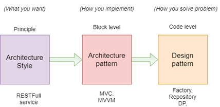
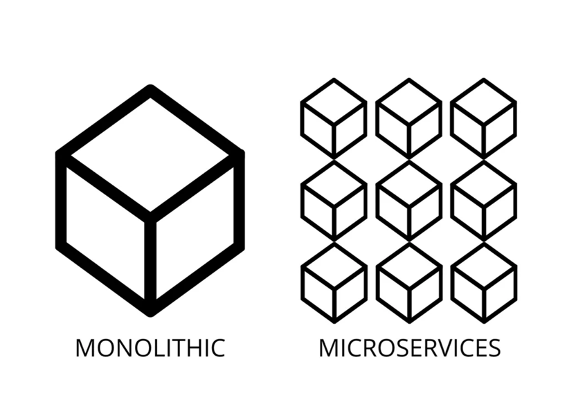

Part 1: Foundations of Microservices
1.1 Introduction to Microservices
🚀 What is Microservices
Microservices is an architectural style where an application is broken down into a collection of small, autonomous services, each responsible for a specific business capability.
Each microservice:
- Runs in its own process.
- Is independently developed, deployed, and scaled.
- Communicates with other services via lightweight protocols like HTTP/REST, gRPC, or messaging (e.g., Kafka, RabbitMQ).
✅ When to Use Microservices?
Use Microservices when:
- Your application is large and complex.
- You want to enable independent team development and deployment.
- Different parts of your system have different scaling needs.
- You want to improve fault isolation — failure in one service doesn't crash the whole system.
- You're adopting DevOps, CI/CD, containerization (Docker), or cloud-native development.
- You have long release cycles or tight coupling in your monolithic system.
❌ Avoid Microservices When:
Avoid Microservices if:
- Your application is small or simple.
- Your team is small — microservices add operational overhead.
- You don’t have solid DevOps, CI/CD, monitoring, and automation in place.
- You need tight consistency across components (microservices prefer eventual consistency).
- You're not ready to handle complex inter-service communication and distributed system challenges.
- You need to move fast early in development — monoliths are faster to build initially.
 (source:https://learn.microsoft.com/en-us/azure/architecture/guide/architecture-styles/microservices)
(source:https://learn.microsoft.com/en-us/azure/architecture/guide/architecture-styles/microservices)
🧠 Key Differences: Architecture Pattern vs Design Pattern vs Architecture Style
| Concept | Definition | Scope | Example(s) |
|---|---|---|---|
| Architecture Style | A broad, high-level approach to organizing a system's structure. | System-wide | Layered, Client-Server, Microservices, Serverless |
| Architecture Pattern | A solution template for organizing components and their interactions in a system. | High-level structure | Clean Architecture, Onion Architecture, Hexagonal (Ports & Adapters), Event-Driven |
| Design Pattern | A reusable solution to common problems in object-oriented design. | Code-level | Singleton, Factory, Strategy, Mediator, Repository |
 (source:https://www.codeproject.com/Articles/5273373/Whiteapp-ASP-NET-Core-using-Onion-Architecture)
🔍 Simple Explanation:
- Architecture Style is like the blueprint theme for your building (e.g., colonial, modern).
- Architecture Pattern is the layout inside the building (where the rooms and walls go).
- Design Pattern is about the furniture arrangement and how parts inside a room interact.
🧩 When to use each?
- Use Architecture Styles to choose your system structure (e.g., microservices vs monolith).
- Use Architecture Patterns to organize services and modules (e.g., clean separation of concerns).
- Use Design Patterns to solve specific coding problems (e.g., reduce coupling between objects).
🏗️ Monolith vs Microservices
| Aspect | Monolithic Architecture | Microservices Architecture |
|---|---|---|
| Definition | A single, unified application where all components are tightly coupled. | An application built as a collection of small, independent services. |
| Deployment | Entire application is deployed together. | Each service is deployed independently. |
| Scalability | Scales as a whole unit. | Individual services can be scaled independently. |
| Development | Easier to develop initially, especially for small teams. | Allows parallel development by different teams. |
| Technology Stack | Typically uses a single stack (e.g., .NET, Java). | Services can use different stacks (polyglot). |
| Communication | Function/method calls within one app. | Lightweight protocols (HTTP, REST, gRPC, messaging). |
| Data Management | Often uses a single shared database. | Each service owns its own database (database per service). |
| Testing | Easier to test end-to-end. | Requires service-level testing, mocking, integration testing. |
| Maintenance | Can become hard to maintain as the codebase grows. | Easier to maintain and update individual services. |
| Failure Isolation | A bug in one part can crash the whole system. | Failure in one service doesn’t affect others (better resilience). |
| Deployment Speed | Slower, entire app must be redeployed for changes. | Faster, deploy only the changed service. |
| Best For | Small to medium applications or early-stage projects. | Large, complex, or enterprise systems requiring scalability. |

🧠 Summary:
- Use Monolith when you're building something simple, fast, or in the early stage.
- Use Microservices when your system grows, and you need scalability, team independence, and faster deployments.